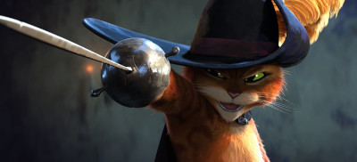

"Gato de Botas: O último pedido", é uma (ótima) supresa de verão!
Gato de Botas: O último pedido é com certeza uma ótima surpresa para o nosso verão. Não tem como não gostar desse dessa persona, que é o Gato de Botas, de que desde sua primeira aparição nesse universo DreamWorks, Em Shrek 2, encanta com seu estilo e sua personalidade...
Leia mais